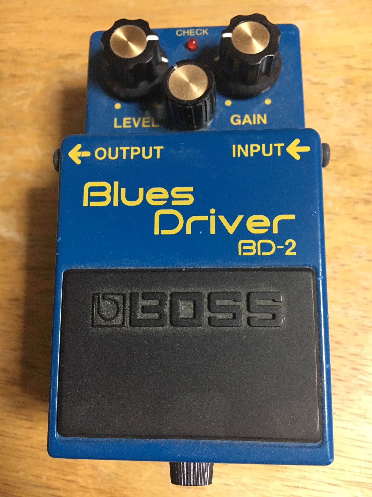
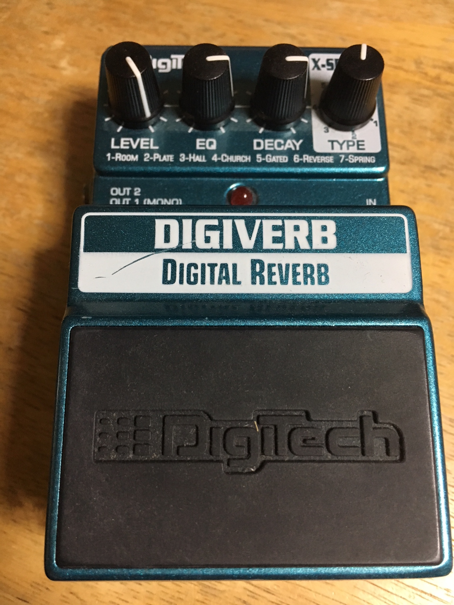
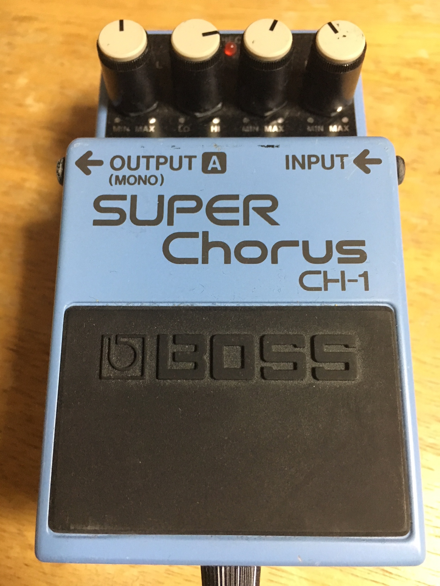
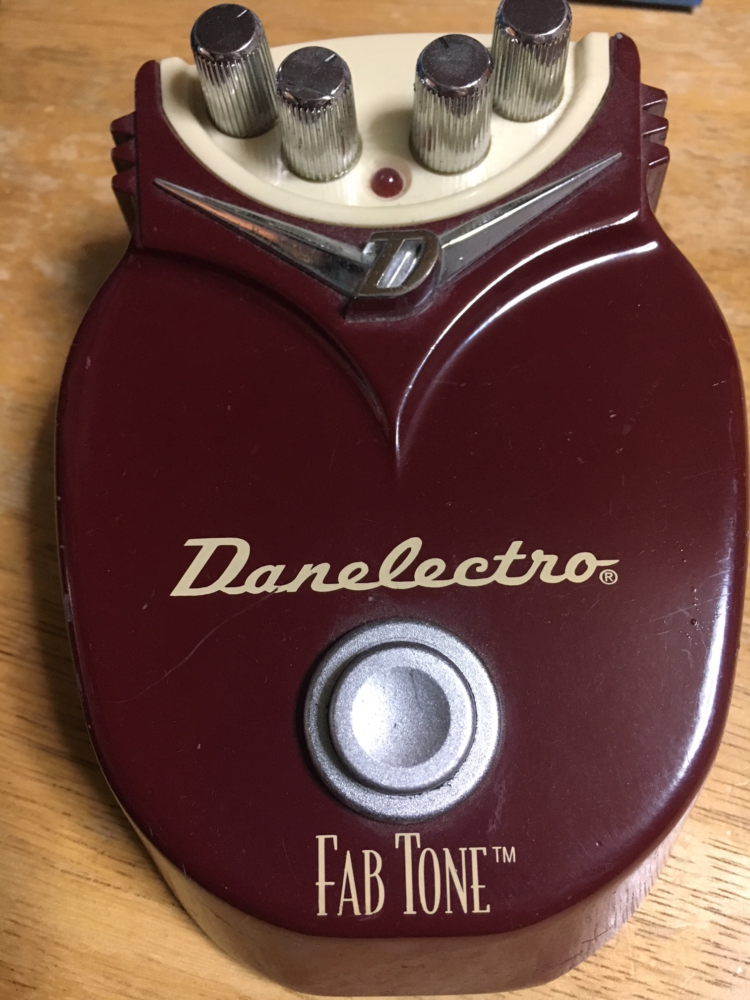

エフェクター紹介
ボタンを押すと僕の持ってるエフェクターをランダムに紹介します。
ボタン
BOSS BD-2

言わずと知れた名器。
00年代のバンドマンは皆使っていたんじゃないかというくらい
長いことスタンダードとして降臨していた。
表現するならばジャキジャキした音になる。
中2の時入手したが名前があんまりに格好いいのでこれにした。
CLOSE
DigTech DIGIVERB

ギター音に残響音を加えるやつ。
このエフェクターのスイッチを押せば
風呂場で歌ったときみたいな感じをギター音に起こせるし、
更にその残響音を逆再生して浮遊感を出すという事ができる。
なんだかわからんが文明の進歩ってスゲー！！！
CLOSE
BOSS CH-1

鳴らしたギター音とほぼ同じコーラス音を作り出して被せてくれる感じ。
そうすることで厚みが出たり不思議な音になったりする。
このエフェクターは爽やかなコーラス音を作り出してくれる。
言わば青春である。
バンドマンは青春に弱いのでコーラス音を聞くと泣き出す。
CLOSE
Danelector FABTONE

やばいやつ。
モグワイという音がとんでもなくでかいバンドの人が使ってるらしい。
個人的にやばい音がして好きだけども
使いどころは限られてしまう。
やばい音しか出ないのに生産しておらずまあまあの値で取引されている。
CLOSE